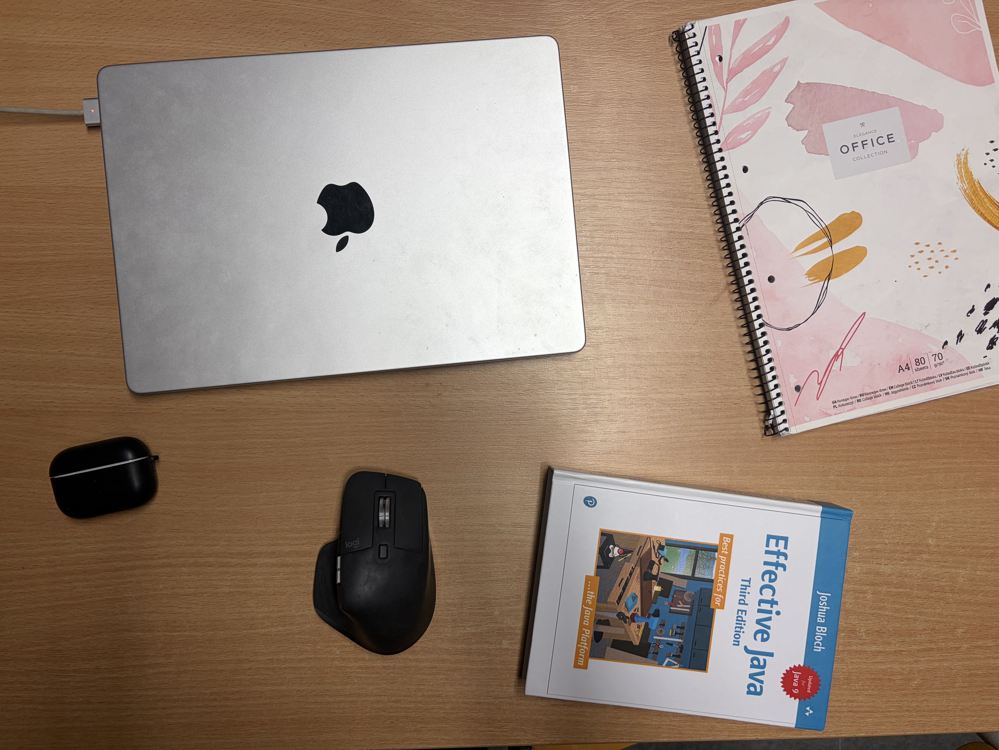

Notebook
Toto je môj MacBook. Používam ho na programovanie školských zadaní, sledovanie videí a štúdium.
Tu študujem, programujem a pripravujem svoje projekty. Vyberte označený bod a pozrite si, na čo jednotlivé časti používam.
Kliknite na očíslovaný bod

Toto je môj MacBook. Používam ho na programovanie školských zadaní, sledovanie videí a štúdium.
Toto je moja myš. Používam ju pri práci s dizajnom alebo pri hraní hier.
Toto sú moje poznámky z predmetu Lineárna algebra 2.
Toto sú moje slúchadlá. Pomáhajú mi sústrediť sa alebo relaxovať.
Toto je kniha o Jave, ktorú práve čítam.
Kliknite na očíslovaný bod na fotografii a zobrazia sa ďalšie informácie.